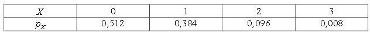
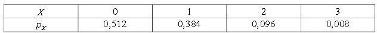
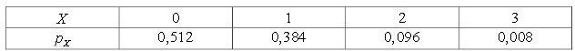

,p>

,p>

An exam is made up of three trigonometry problems, two algebra problems and five geometry problems. Martin is able to solves trigonometry problems with probability $p_1$ = 0.2, geometry problems with probability $p_2$ = 0.4, and algebra problems with probability $p_3$ = 0.5. To get a B, Martin needs to solve at least five problems, where the grades are as follows $($A+, A, B, C, D$)$.
a) With what probability does Martin solve at least five problems?
Martin decided to work hard on the problems of any one section. Over a week, he can increase the probability of solving the problems of this section by 0.2.
b) What section should Martin complete, so that the probability of solving at least five problems becomes the greatest?
c) Which section should Martin deal with, so that the mathematical expectation of the number of solved problems becomes the greatest?
a) Let the random variable X be the number of solved problems in the trigonometry section, Y - the number of solved problems in the geometry section, and Z - the number of solved problems in the algebra section. Then the sum U = X + Y + Z is the total number of solved problems. We want to find the probability $P (U \geq 5)$. Note that, it is easier to calculate P$(U <5)$ = P$(U = 0) + P (U = 1) + P (U = 2) + P (U = 3) + P (U = 4)$.
We will write down the tables for the distribution of the random variables X, Y, and Z.
The probability of solving $0 \leq k \leq 3$ trigonometric problems is
,p>

The probability of solving $0 \leq n ≤\leq 5$ problems in the geometry section is 

And the probability of solving $0 \leq m \leq 2$ problems in the algebra section is 

Now we can fill out a similar table for U, representing the number of solved problems in the form of a sum of different the summands. Where P $(X = k, Y = n, Z = m) = P (X = k) P (Y = n) P (Z = m)$.
 The probability P $($U = l$)$ to obtain the grade l $($an A+$)$ is the sum of the probabilities of each of the cases of the partition of l.
The probability P $($U = l$)$ to obtain the grade l $($an A+$)$ is the sum of the probabilities of each of the cases of the partition of l.

The required probability is P $(U \geq 5)$ = 1 – P$($U $<$ 5$)$ ≈ 0.27.
c) By a method analogous to that indicated in a), we find that if we increase by 0.2 the probability of solving problems in the trigonometry section, then the probability of solving at least 5 problems P $(U \geq 5)$ becomes 0.41752576 ≈ 0.42.
If we increase the probability of solving problems by geometry by 0.2, we obtain P $(U \geq 5)$ = 0.52636928 ≈ 0.53. If we increase by 0.2 the probability of solving problems in the algebra section, we obtain P $(U \geq 5)$ = 0.35814546 ≈ 0.36. Thus, Martin should be focus on geometry.
c) We can calculate the mathematical expectation of the number of solved problems EU = EX + EY + EZ. $EX = EX_1 + EX_2 + EX_3$, where $X_i$ is 1 with probability $p_1$ if the i-th trigonometric problem is solved, and 0 with probability 1 – $p_1$, if it is not solved. Hence, $EX_i = p_1$, from where we know that EX = $3p_1$. Similarly, EY = $5p_2$, EZ = $2p_3$, that is EU = $3p_1 + 5p_2 + 2p_3$. Hence, as $p_1$ increases by 0.2, EU will increase by 0.6, when $p_2$ increases by 0.2, EU will increase by 1 and when $p_3$ increases by 0.2, EU will increase by 0.4.
Thus, the mathematical expectation of the number of solved problems will be greatest in the case when Martin focuses on geometry.
a) ≈ 0.27; b) -c) geometry.